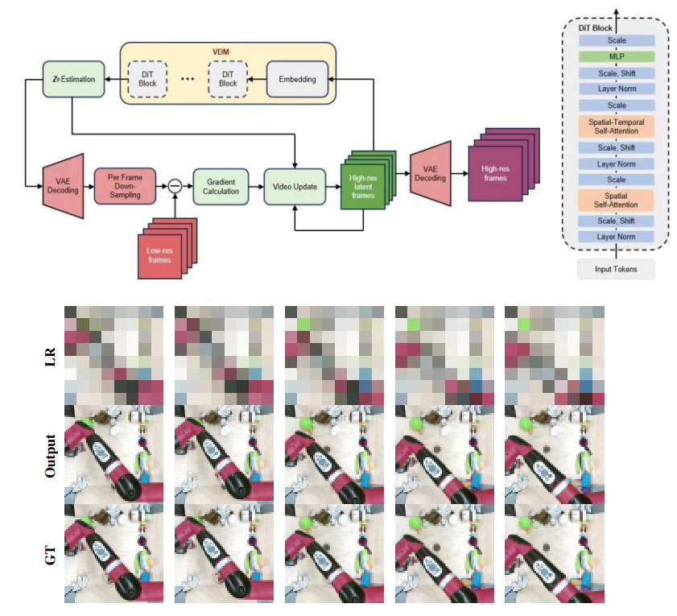
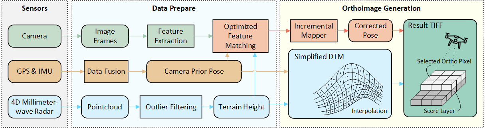
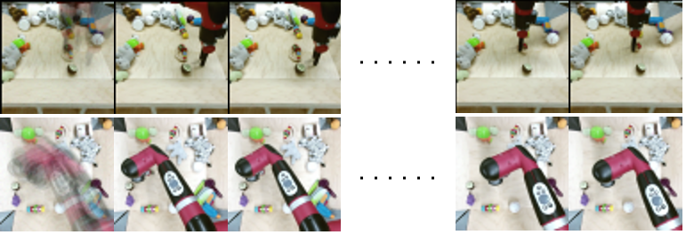

Research
I'm interested in SLAM, Spatial AI, and Robotics.
*: co-first author
|
|

|
Rethinking Video Super-Resolution: Towards Diffusion-Based Methods without Motion
Alignment
Zhihao Zhan*, Wang Pang*, Xiang Zhu*, and Yechao Bai
17th International Conference on Signal Processing Systems (ICSPS), 2025,
Oral
arXiv
We rethink the approach to video super-resolution by introducing a method based on the Diffusion
Posterior Sampling framework, combined with an unconditional video diffusion transformer operating
in latent space. The video generation model, a diffusion transformer, functions as a space-time
model. We argue that a powerful model, which learns the physics of the real world, can easily handle
various kinds of motion patterns as prior knowledge, thus eliminating the need for explicit
estimation of optical flows or motion parameters for pixel alignment.
|
|

|
A Multi-Sensor Fusion Approach for Rapid Orthoimage Generation in Large-Scale UAV Mapping
Jialei He*, Zhihao Zhan*, Zhituo Tu, Xiang Zhu, and Jie Yuan
IEEE/RSJ International Conference on Intelligent Robots and Systems (IROS), 2025,
Oral
arXiv
In this paper, we utilize multi-sensor data to overcome the limitations of conventional orthoimage
generation methods in terms of temporal performance, system robustness, and geographic reference
accuracy. A prior-pose-optimized feature matching method is introduced to enhance matching speed and
accuracy, reducing the number of required features and providing precise references for the
Structure from Motion (SfM) process. The proposed method exhibits robustness in low-texture scenes
like farmlands, where feature matching is difficult.
|
|

|
Image Motion Blur Removal in the Temporal Dimension with Video Diffusion Models
Wang Pang*, Zhihao Zhan*, Xiang Zhu*, and Yechao Bai
IEEE International Conference on Image Processing (ICIP), 2025
website
/
arXiv
/
code
We propose a novel single-image deblurring approach that treats motion blur as a temporal averaging
phenomenon. Our core innovation lies in leveraging a pre-trained video diffusion transformer model
to capture diverse motion dynamics within a latent space. It sidesteps explicit kernel estimation
and effectively accommodates diverse motion patterns.
|
Academic Services
Conference Reviewer
- IEEE/RSJ International Conference on Intelligent Robots and Systems (IROS): 2025
- IEEE International Conference on Robotics and Automation (ICRA): 2026
Journal Reviewer
|
This website is adapted from Jon Barron's template.
|
|
{kind=link}
{kind=link}
{kind=link}
{kind=link}